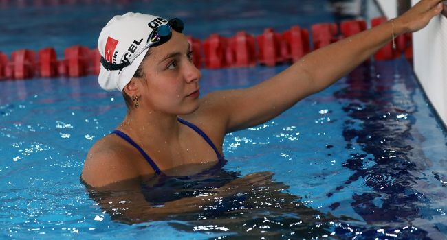
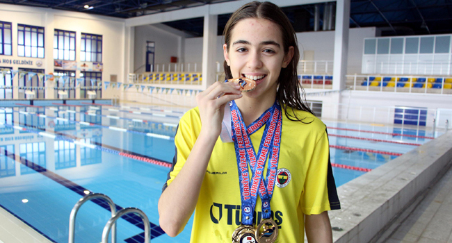
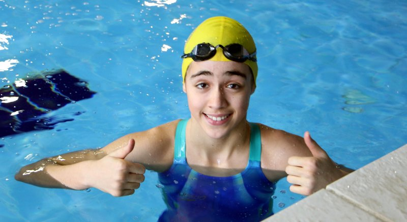
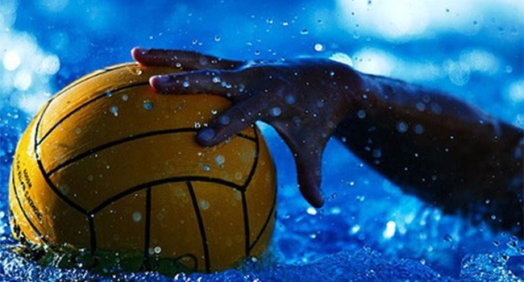

14 Aralık 2022 Çarşamba 18:49 - Son Güncelleme 14 Aralık 2022 Çarşamba 18:55 | Kaynak : AA
Avustralya'da düzenlenen Dünya Kısa Kulvar Yüzme Şampiyonası'nın ikinci gününde milli sporcu Merve Tuncel, kadınlar 800 metre serbest stilde 5. sırayı aldı.

Melbourne kentinde devam eden organizasyonda, kadınlar 800 metre serbest stilde Merve Tuncel ve Deniz Ertan mücadele etti.
Milli sporculardan Merve 8:17.89'luk derecesiyle 5. olurken, Deniz yarışı 8:29.92 ile 11. sırada bitirdi.
Erkekler 100 metre kurbağalamada yarışan milli sporculardan Berkay Ömer Öğretir elemeleri geçemezken, Hüseyin Emre Sakçı 13. sırada yer alarak yarı finale yükseldi. 57.65'lik derecesiyle finale kalamayan Hüseyin Emre Sakçı, 12. sırada yer aldı.
06 Aralık 2022 Salı 11:25 - Son Güncelleme 06 Aralık 2022 Salı 11:33 | Kaynak : DHA
Edirne'de 6 yaşında su korkusunu yenmek için başladığı yüzmede 200 metre serbest ve 400 metre karışıkta 3. kez Türkiye Şampiyonu olan Fenerbahçe Spor Kulübü'nün sporcusu Beyza Işık'ın (13) hedefi olimpiyatlarda ülkeyi temisl etmek.

Edirne'de yaşayan Beyza Işık, 6 yıl önce sudan korktuğu için başladığı yüzmede 3'ncü kez Türkiye Şampiyonu oldu.
Edirne Yüzme Kulübü’nde başladığı yüzmede ilk derecesini, Türkiye Yüzme Federasyonu 12 Yaş Ulusal Gelişim Projesi Ligi 200 metre kelebek stilinde Türkiye Şampiyonu olarak kazanan Beyza Işık, daha sonra 400 metre karışık stilde 1'nci oldu.
En son 2-4 Aralık’ta düzenlenen Türkiye Arena Kısa Kulvar Küçükler Bireysel Yüzme Şampiyonası'nda 200 metre kelebek ve 400 metre karışık stillerinde birinci olan Işık, 3'ncü kez Türkiye Şampiyonluğu’na ulaştı. Aldığı başarılı derecelerin ardından Fenerbahçe Küçükler Yüzme Takımı'na transfer olan milli yüzücü Işık, en büyük hayalinin ise Olimpiyatlar’da madalya almak olduğunu söyledi.
"Hedefim olimpiyatlarda ülkemi temsil etmek"
Hedefinin milli sporcu olarak olimpiyatlarda ülkesini temsil etmek olduğunu belirten Işık, "Çok disiplinli bir şekilde çalışıyoruz. Sabah akşam antrenmanlarımı aksatmadan çalışıyorum. Beslenmemden uyku düzenime, antrenmanlarıma, hepsine çok dikkat ederek, böyle şampiyonalara çok güzel bir şekilde hazırlanıyorum. Her şampiyonada yeni rakipler çıkabiliyor. Heyecan her yarışta oluyor ama önemli olan bu heyecanı strese dönüştürmemek.

200 metre kelebek ve 400 metre karışık stillerinde Türkiye şampiyonu oldum. Fenerbahçe’ye transfer olmak çok güzel bir duygu. Böyle büyük bir kulübe katılmak gerçekten çok mutluluk verici. Bu kulüp çerçevesinde ilk kez yarışa katıldım ve çok mutluyum. Şu anki hedefim, milli takımda ülkemi en iyi şekilde temsil etmek. Olimpiyatlara giderek ülkemi en iyi şekilde temsil etmek istiyorum" dedi.
Küçük yaştan beri Fenerbahçe taraftarı olduğunu ve hayalinde sevdiği kulübe transfer olmak olduğunu söyleyen Işık, "Ben küçüklüğümden beri Fenerbahçe’yi tutuyorum ve hayalim Fenerbahçe’ye transfer olmaktı. Bu kulübe transfer olduğum için de çok mutluyum. İlk önce ailemle görüştüler, sonra bana fikrimi sordular. Ben de zaten küçüklüğümden beri Fenerbahçe’de yüzmek istiyordum. Süreç böyle ilerledi, sonra da Fenerbahçe’ye transfer oldum. Şu anda da çok mutluyum" diye konuştu.
"Yüzmeye su korkum olduğu için başladım"
Yüzme sporuna su korkusu olduğu için başladığını ve ardından suyu çok sevdiğini anlatan Işık, "Yüzmeye su korkum olduğu için başladım. 6 yaşındayken ailem kursa yazdırmıştı. Çünkü sudan gerçekten çok korkuyordum. Sonra bırakmadım, suyu daha çok sevdim ve buralara kadar geldim. Korkumu yendim.
Aslında korkudan başlayacak şampiyonluğa diyebiliriz. İnşallah daha da iyi olurum. Sudan korkuyordum, kendim yüzemiyordum. Yaz tatillerinde sürekli babama tutunuyordum. Hedefim, milli takım formasıyla olimpiyatlarda ülkemi en iyi şekilde temsil ederek, bayrağımızı göklere çıkarmak" dedi.
03 Aralık 2022 Cumartesi 12:39 - Son Güncelleme 03 Aralık 2022 Cumartesi 12:44 | Kaynak : TRT SPOR
Ağrı'da günün büyük bölümünü geçirdikleri evlerinden çıkıp yüzme sporuna başlayan bedensel engelliler, milli forma hayaliyle antrenman yapıyor.
İbrahim Çeçen Üniversitesi bünyesinde 4 yıl önce kurulan, başkanlığını ve antrenörlüğünü Spor Bilimleri Fakültesi Öğretim Üyesi Doç. Dr. Baykal Karataş'ın yaptığı Sağlık Kültür ve Spor Kulübü sayesinde daha önce evlerinde vakit geçiren 11 bedensel engelli, yüzme sporuna kazandırıldı.
Bu süreçte yüzmeyi öğrenip yurt içinde düzenlenen ulusal organizasyonlara katılan engelli yüzücüler, birçok şampiyonadan dereceyle döndü.
Müsabakalar nedeniyle daha önce hiç görmedikleri şehirleri de gezme fırsatı bulan engelli yüzücüler, sporla hem sosyalleşti hem özgüven ve kuvvet elde etti.
Milli sporcu olmayı hedefleyen yüzücüler, üniversitenin yarı olimpik kapalı yüzme havuzunda 5-7 Aralık'ta Konya'da düzenlenecek Para Yüzme Şampiyonası'nda başarılı olmak için yoğun antrenman yapıyor.
- Hedef Avrupa kotası
Sağlık Kültür ve Spor Kulübü Başkanı Öğretim Üyesi Doç. Dr. Karataş, AA muhabirine, bugüne kadar çok sayıda müsabakaya katıldıklarını ve başarılar elde ettiklerini dile getidi.
Sporcularının fiziksel anlamda güçlendiğini ve sosyalleştiğini ifade eden Karataş, şöyle konuştu:
"Daha önce görmedikleri şehirlere gittikleri için kültürel zekaları da arttı. Bu sporcular daha önceleri evlerinde televizyon karşısında oturan, sokağa zar zor çıkabilen, arkadaşlarıyla iletişim kurmada problem yaşayan çocuklardı. İçlerinde yüzmede normal bireylere kafa tutacak sporcularımız da var. Bu arkadaşlarımızla hedefimiz öncelikle Avrupa kotalarını yakalayabilmek. Milli takım düzeyinde yarışlara katıldıktan sonra da kamplara katılıp orada ülkemizi en iyi yerlerde temsil etmek istiyoruz."
"Ülkemizi iyi yerlerde temsil etmek istiyoruz"
Karataş, farklı illerde katıldıkları müsabakalarda birincilik ve ikincilikler kazandıklarını, madalyaların sporcuları motive ettiğini söyledi.
Tüm engellileri havuza davet ettiklerini belirten Karataş, "Biz bir takımız, bu yüzden gelecekte inanıyorum ki Paralimpik Oyunları'nda içimizden birileri mutlaka bizi temsil edecektir. 'Yarının Engellisi' sloganıyla çıktığımız bu yolda Ağrı'daki tüm engelli arkadaşlarımızı havuza bekliyoruz. Zaten halihazırda hafta sonları Down sendromlu, otizmli ve diğer küçük sporcularımız var. Onlarla devam ediyoruz. Bize katılın güçlenelim. Şehrimizi temsil edelim. Ülkemizi iyi yerlerde temsil edelim." ifadelerini kullandı.
Sporculardan Taha Burak Duzlu ise serebral palsi hastası olduğunu, geçmişte çok yoğun fizik tedavi gördüğünü, yüzmenin kendisine çok iyi geldiğini dile getirdi.
Katıldığı yarışlarda Türkiye ikinciliği, üçüncülüğü ve dördüncülüğünün bulunduğunu anlatan Taha Burak, "Ben yüzmeden önce topuğumu yere basamıyordum. Şimdi basabiliyorum. Eskiden elimi bir şeye götüremiyordum, şimdi götürebiliyorum." diye konuştu.
Doğukan Bayat da yüzmeyle hayatlarının değiştiğini ve bu branşta antrenör olabileceğini vurgulayarak, "Önceden dışarıya çıkmıyordum, evde oturuyordum. Yüzme sayesinde sosyalleştim ve çok sayıda arkadaş edindim." değerlendirmesinde bulundu.
22 Kasım 2022 Salı 18:43 - Son Güncelleme 22 Kasım 2022 Salı 18:43 | Kaynak : AA
Avrupa Yüzme Birliği (LEN) tarafından düzenlenen Sutopu Challenger Kupası'nda Türkiye'yi temsil eden ENKA ile Galatasaray'ın çeyrek finaldeki rakipleri belirlendi.

Türkiye Sutopu Federasyonundan yapılan açıklamaya göre, çeyrek final kuraları İspanya'da çekildi.
Kura sonucunda Galatasaray, Yunanistan'ın Apollon Smyrnis, ENKA ise Hollanda temsilcisi Het Ravijn takımıyla eşleşti.
Çeyrek final karşılaşmalarının ilki 25 Ocak 2023, ikincisi ise 8 Şubat 2023'te oynanacak. Galatasaray ilk maçını deplasmanda, ENKA ise evinde oynayacak.
REKLAM